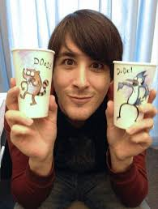

El personaje de Mordecai está inspirado en la vida de Quintel cuando era estudiante en CalArts, y que definió como «esa etapa en la que sales con tus amigos y te metes en problemas estúpidos, pero también eres capaz de tomártelos en serio». Para diseñar a Rigby se basó en el boceto de un mapache que hizo en su tiempo libre; sobre el cual desarrolló una personalidad hiperactiva y menos responsable que la de su compañero.9 Durante sus estudios el autor hizo trabajos eventuales para pagarse la carrera, al igual que sucede con los protagonistas de la serie, y sus expresiones son muy parecidas a las que Quintel decía con sus amigos.
Cada episodio tiene detrás a un equipo de guionistas que trabaja la idea principal y luego desarrolla un guion gráfico. El resultado se entrega a los supervisores de la cadena y éstos lo devuelven con sugerencias y anotaciones. Todos los episodios se basan en situaciones vitales del equipo de guionistas, tales como relaciones personales, flirteo, organizar fiestas o participar en concursos de comida.A pesar de que los personajes son animales o seres ficticios, siempre tienen un comportamiento humano. Los diálogos con uso de lenguaje coloquial van en la misma dirección. Cuando se introducen los elementos surrealistas, se pretende que tengan relación con la historia y funcionen como un elemento central.
En Estados Unidos su clasificación por edad fue «TV-PG» (supervisión paternal).El objetivo de Cartoon Network era aumentar la edad media de su audiencia, por lo que aceptó que Quintel dirigiese la serie a público más mayor que el objetivo del canal, situado entre los 6 y 11 años. A diferencia de otras de sus series emblemáticas, los protagonistas de Regular Show ya han superado la adolescencia y se emplea un humor más transgresor de lo habitual, con claras referencias nostálgicas, dobles sentidos e incluso humor adulto de forma velada.En algunas ocasiones se han retocado diálogos para evitar expresiones soeces o malsonantes, pero en otras lo han conseguido mantener.
La producción corrió a cargo de Cartoon Network Studiosz en Burbank, California. El equipo estaba formado por cuarenta personas lideradas por el propio J. G. Quintel como productor ejecutivo, e incluye guionistas, dibujantes, guionistas gráficos, entintadores y diseñadores de personajes. Los dibujos están hechos a mano y se rematan con entintado y pintura digital. Los supervisores eran John Infantino como director creativo y Sean Szeles por parte del equipo de guionistas.
Después de que se haya perfilado la idea principal, se elabora un guion gráfico (storyboard) sobre el que se trabaja la animación y se mezcla con los diálogos.Un episodio de duración normal —11 minutos— incluye más de 16.000 fotogramas.Cuando el guion recibía la aprobación de Cartoon Network, todo el material —fondos, bocetos, diseños de personajes— se enviaba con las correspondientes instrucciones a un estudio profesional de animación en Corea del Sur, Saerom Animation. Al terminarlo, volvía al estudio de California para añadir las voces, música y efectos sonoros. Cada episodio de Regular Show tardaba nueve meses en completarse, pero el modelo de trabajo permitía producir varios capítulos al mismo tiempo.
El reparto de voces en Regular Show pretendía que las conversaciones sonaran naturales, con mucho lenguaje coloquial, para dar más veracidad a las situaciones y llegar a públicos de mayor edad. El elenco entremezcla a miembros del equipo creativo con actores de voz profesionales. En el primer grupo J. G. Quintel interpreta a Mordecai y Hi-Five Ghost, mientras que Sam Marin —animador al que conoció en CalArts— interpreta a Benson y Minty Lewis —guionista gráfica— presta su voz a Eileen.En cuanto a las voces profesionales, la más conocida es la de Mark Hamill en el papel de Skips. El resto del reparto está formado por William Salyers (Rigby), Janie Haddad (Margaret) y Roger Craig Smith (Thomas).En ocasiones se ha recurrido a voces profesionales adicionales para personajes secundarios.
El doblaje para Hispanoamérica se grababa en México. El estudio de doblaje Sensaciones Sónicas se encargó de la primera a la cuarta temporada, mientras que el estudio SDI Media de México tomó el control a partir de la quinta.Los directores de doblaje fueron Christine Byrd (1ª), Carlos Hugo Hidalgo (2ª a 4ª) y Moisés Iván Mora (5ª a 8ª). En España, los estudios Deluxe 103 de Madrid se ocuparon de la primera a la quinta temporada, y SDI Media de Madrid la asumió a partir de la sexta, en ambos casos bajo la dirección de Santiago Aguirre.. La versión hispanoamericana es más fiel a los diálogos originales, mientras que en la española se acordó una adaptación coloquial para mantener el espíritu de la serie.
Algunos nombres de personajes han sufrido variaciones en los doblajes en castellano. En España, solo se cambió el de Muscle Man y Hi-Five Ghost por Musculitos y Fantasma Chócala, respectivamente. En Hispanoamérica se hizo lo propio por Musculoso y Fantasmano, pero también se tradujeron los nombres de Pops (como Papaleta) y Margaret (Margarita).
